Home › C · Satellite case studies
The middle and last third of the lecture applies the theory to real satellite products: the least-squares cost function, ozone from IASI and GOME-2 (alone and combined), the Absorbing Aerosol Index and look-up-table AOD, polarisation, and the thermal-IR (AEROIASI) and O₂ A-band (AEROS5P) 3D aerosol retrievals. Questions about Q3, Q5, Q6 and Q8 can use these as examples.
Retrieval details from the lecture
Remote sensing of composition is a constrained fit of calculated spectra to the measured one. The cost function and its iterative solution are:
- y observations, Sy their error covariance, F the radiative transfer (forward) model, K the Jacobian (sensitivity of the spectrum to the state).
- The problem is ill-posed: a constraint toward the a-priori (optimal estimation, Tikhonov–Phillips) is needed; non-linearity requires iteration.
- Forward-model inputs: geometry, T and P profiles, spectroscopic databases (HITRAN, GEISA).
- Other approaches: neural networks, look-up tables, DOAS.

Ozone from space: IASI, GOME-2 and their combination
- UV reflectance → stratosphere and total column (TOMS since 1978; GOME tropospheric column up to ≈ 12 km at mid-latitudes). IR radiance → free troposphere (IMG 1996, TES 2006, IASI).
- IASI (MetOp since 2006): global coverage twice daily (≈ 9:30 and 21:30 LT), 25 km at nadir, swath ≈ 2000 km, 0.5 cm⁻¹. GOME-2: 40 × 80 km², swath ≈ 1920 km, ≈ 0.24 nm.
- IASI ozone: maximum sensitivity around 3 km; DOFS over land ≈ 0.6 up to 6 km, ≈ 1.2 up to 12 km; bias < 2.5%, precision ≈ 15% against sondes.
Multispectral approach: a joint inversion of co-located IR and UV spectra adjusts a unique ozone profile by minimising both residuals (UV: VLIDORT; IR: KOPRA).
| Below 3 km | IASI (IR) | GOME-2 (UV) | IASI+GOME-2 |
|---|---|---|---|
| DOFS land / ocean | 0.25 / 0.15 | < 0.10 | 0.35 / 0.25 |
| Height of max. sensitivity (km agl) | 3.0 land / 4.3 ocean | 3.7 | 2.2 land / 3.5 ocean |
Gain: +40% DOFS over land, peak sensitivity ≈ 800 m lower (Python from the slide values). Validation: 105 sondes, 10 European stations, summer 2009.

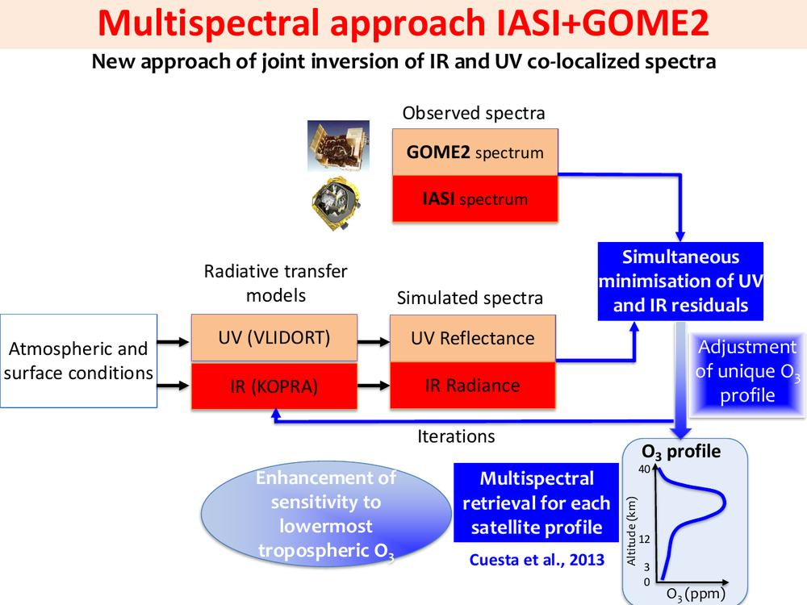
Passive aerosol retrieval: AAI, look-up tables, polarisation
- AAI (UVAI): residual between measured and aerosol-free modelled radiance at two wavelengths, surface albedo assumed constant. > 0.5 ⇒ absorbing aerosols (dust, smoke, volcanic ash); not sensitive to surface type, defined above clouds; depends on SSA, AOD and height (examples: Hunga Tonga ash 2022, smoke to the Arctic).
- AOD over dark surfaces: TOA reflectance = surface + Rayleigh + aerosol; look-up tables of pre-computed reflectance per aerosol type, geometry and wavelength; mix fine and coarse models to find AOD and fine-mode fraction; surface from a linear relation with the 2.1 µm channel; cloud screening essential. Global mean AOD ≈ 0.15 at 550 nm, range 0.05–2; records over 20 years.
- Polarisation (POLDER): polarised radiance = molecular (well known) + surface (small, smooth) + aerosol (governed by the scattering angle) ⇒ phase function ⇒ size, refractive index, shape.
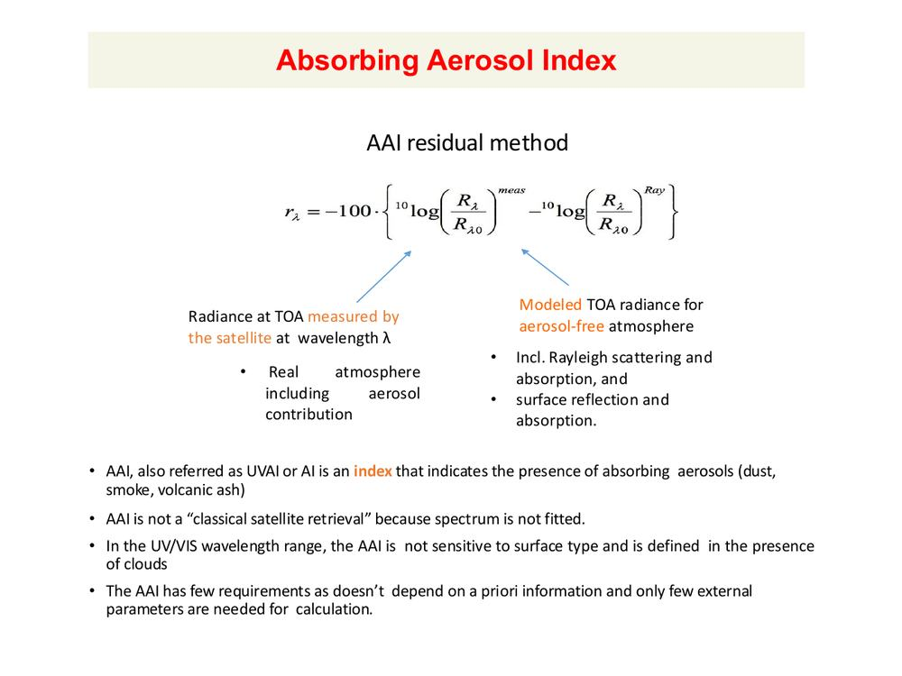
3D aerosols: AEROIASI and AEROS5P
- AEROIASI (thermal IR): extinction profile at 10 µm for each cloud-free IASI pixel from 12 micro-windows at 8–12 µm; auto-adaptive Tikhonov–Phillips; surface emissivity, dust refractive index, size (AERONET) and one a-priori profile (CALIOP climatology). Validation: AERONET (13 sites, N = 631): bias −0.002, R = 0.76, RMS 0.11, σ ratio 0.92; CALIOP: height bias < 110 m, R = 0.95.
- March 2008 East-Asian dust event: elevated plume at 2–3 km above Beijing (1 March), descending to 2 km over the Yellow Sea (2 March), mixed down to the surface (3 March); CHIMERE kept the dust in the free troposphere; a ground lidar in Japan confirmed AEROIASI.
- AEROS5P (TROPOMI O₂ A band, 760 nm): fine and coarse aerosol extinction profiles with directional surface albedo and AERONET/CALIOP-based models; smoke injection up to 7 km from major fires; compared with MODIS (horizontal) and CALIOP (vertical).
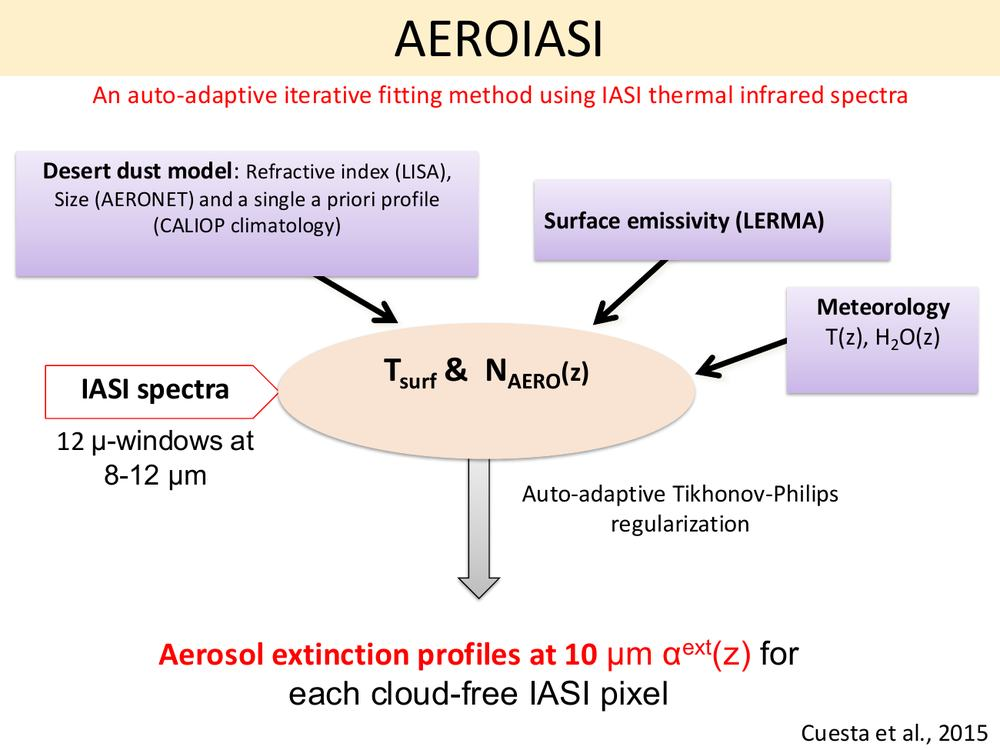
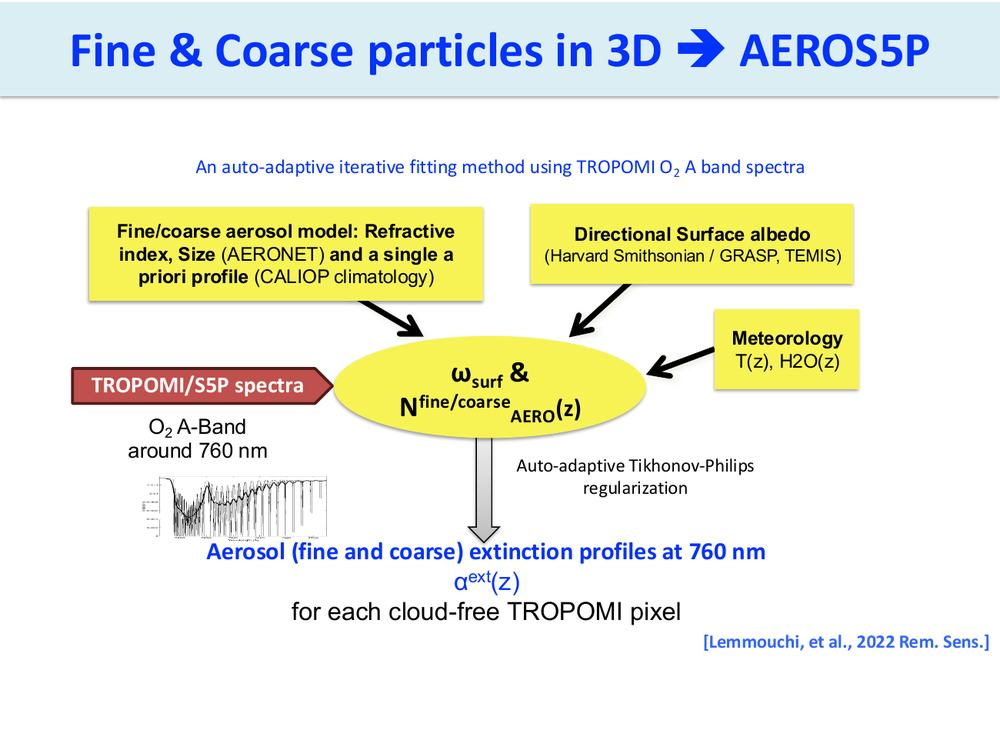
Worked example, quick Q&A and memory hooks
- DOFS below 3 km over land: IASI 0.25, IASI+GOME-2 0.35.
- Gain = 0.35/0.25 − 1 = 40% (ocean: 0.25/0.15 − 1 = 67%).
- Peak sensitivity 3.0 → 2.2 km: 800 m lower.
Quick Q&A
A: Each has a different weighting function; a joint fit constrains one profile with both.
A: No: it depends on SSA, AOD and height.
A: Full radiative transfer per pixel is too slow.
A: It is well mixed, so absorption depth gives photon path.
Memory hooks
- Two eyes see depth: IR and UV are two eyes on the ozone profile.IR và UV như hai mắt cho cảm giác về độ sâu.
- A LUT is a multiplication table: look up the answer instead of recomputing it.LUT như bảng cửu chương.
- The O₂ A band is a ruler: its absorption depth measures the photon path.Dải A O₂ như thước đo đường đi của photon.
Lecture slides for this module (Cuesta master course)
30 pages of the lecture “Remote Sensing of the Atmosphere: a focus on air composition” (J. Cuesta, UPEC). Page numbers refer to the lecture PDF. Click a page to enlarge; browse all pages.
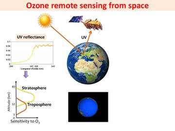
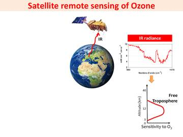


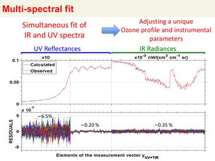


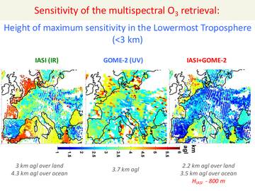
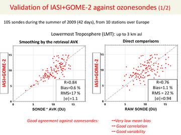
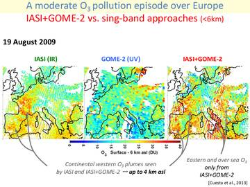


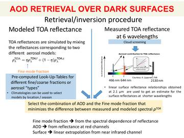
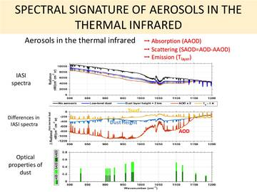
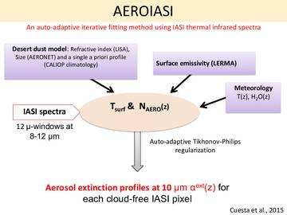
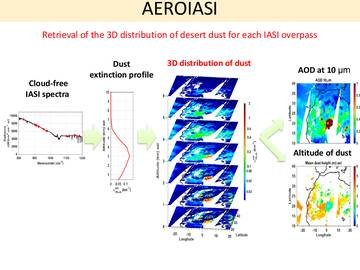
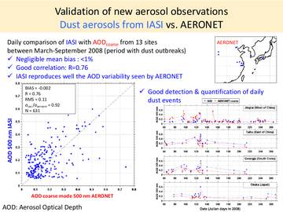
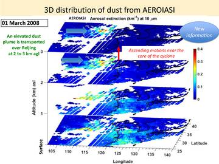
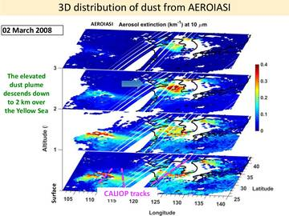
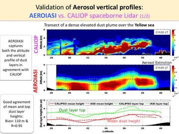
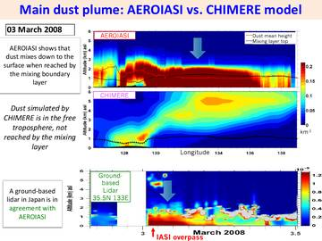
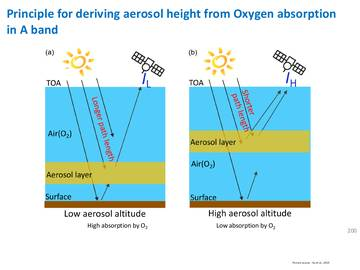


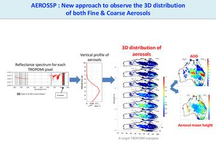

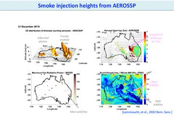
Exam checklist — points you must mention
- Cost function J(x) with S_y⁻¹ and constraint R; iterative Gauss–Newton with the Jacobian; x̂ = xₐ + A(x − xₐ) + ε.
- Ozone: UV (stratosphere, columns), IR (free troposphere, IASI peak ≈ 3 km); DOFS 0.6 (to 6 km) and 1.2 (to 12 km).
- IASI+GOME-2: +40% DOFS over land below 3 km, peak ≈ 800 m lower; validation with 105 sondes.
- AAI > 0.5: absorbing aerosols, not an AOD; LUT-based AOD over dark surfaces; global AOD ≈ 0.15.
- AEROIASI: 12 micro-windows 8–12 µm; AERONET bias < 1%, R = 0.76; CALIOP height bias < 110 m, R = 0.95.
- AEROS5P: O₂ A band, fine and coarse profiles, smoke up to 7 km.
- Hàm giá J(x) = sai khác phổ có trọng số + ràng buộc theo a priori vì bài toán không chỉnh; phi tuyến nên lặp với Jacobian.
- Ozone: UV nhạy tầng bình lưu/cột tổng; IR nhạy tầng đối lưu tự do (IASI cực đại ≈ 3 km). Kết hợp IASI+GOME-2 tăng ≈ 40% DOFS dưới 3 km và hạ đỉnh nhạy ≈ 800 m.
- AAI > 0,5 chỉ báo aerosol hấp thụ (bụi, khói, tro) nhưng không phải AOD; AOD trên bề mặt tối dùng bảng tra LUT.
- AEROIASI (IR nhiệt 8–12 µm) và AEROS5P (dải A của O₂) cho phân bố 3D của aerosol; kiểm chứng với AERONET, CALIOP.
Practice calculations
These tools run in your browser and are checked against Python:
Averaging kernel and DOFS Ångström exponent
Lecture slides (13 slides; use ← → keys or the buttons)
Quick self-check (10 of 20 questions)
Open the full bank: 20 multiple-choice + 3 essay questions →